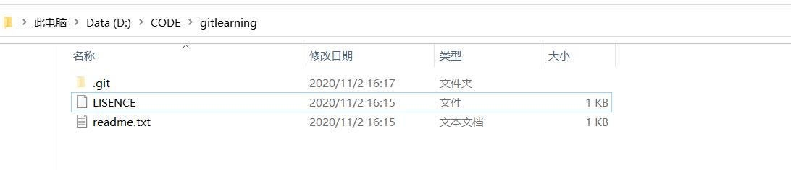

git学习
学习git记录
廖雪峰博客
先从廖雪峰博客git教程中学习并作记录。
知识点记录
-
git属于分布式版本控制系统
-
集中式与分布式
-
集中式的版本控制系统
- CVS和SVN(SVN是对CVS的一种改进)
- 缺点:
- 需要联网工作上传到中央服务器
- 中央服务器坏掉后，会影响所有人
-
分布式的版本控制系统
- git、bitkeeper
- 优点
- 每一个人的电脑都有一个完整的版本库
- 安全性高
github服务器是用来中转的，即每一个人可以把自己修改后的推上去，其他人也可以从中同步，而github服务器故障后，只要本地的仓库(repository)还存在,就不会丢失。而对于集中式的版本控制系统，必须联网提交回滚等操作，如果断网就不能实现这些操作，并且服务器故障后，历史版本信息都没有了
-
-
所有版本控制系统只能跟踪文本文件，如txt、网页、程序代码。不能跟踪二进制文件内容的变化，如图片、word
-
git跟踪并管理的是修改而非文件，意思就是文件中的内容修改后，git能跟踪内容变化是什么。
git安装
sudo apt-get install git
git使用问题
git add与git commit区别
git命令
-
git config1
2$ git config --global user.name "Your Name"
$ git config --global user.email "email@example.com"--global参数表示电脑上的所有仓库都使用该配置
-
git init1
2$ git init
Initialized empty Git repository in D:/CODE/gitlearning/.git/git init用于声明当前目录为git可以管理的仓库- 会生成
.git目录，用于跟踪管理版本库
-
git add1
$ git add readme.txt
- 将文件添加到仓库
-
git commit1
2
3
4$ git commit -m "wrote a readme file"
[master (root-commit) eaadf4e] wrote a readme file
1 file changed, 2 insertions(+)
create mode 100644 readme.txtgit commit表示将文件提交到仓库-m后的文字代表本次提交的说明
-
git status -
查看当前仓库的状态
-
git diff -
查看对当前仓库里的文件做了什么修改
-
git log1
2
3
4
5
6
7
8
9
10
11
12
13
14
15
16
17
18$ git log
commit e31be9240c251ddde0747f160b13ca30a8a055aa (HEAD -> master)
Author: qibin <780891896@qq.com>
Date: Mon Nov 2 15:25:30 2020 +0800
append GPL
commit 99403f77708a6f871ab514371f4dffb075f4c57d
Author: qibin <780891896@qq.com>
Date: Mon Nov 2 15:24:32 2020 +0800
add distributed
commit 620a5b729a1ed380ae4f7630b1255e5cea3694aa
Author: qibin <780891896@qq.com>
Date: Mon Nov 2 15:20:14 2020 +0800
wrote a readme file1
2
3
4$ git log --pretty=oneline
e31be9240c251ddde0747f160b13ca30a8a055aa (HEAD -> master) append GPL
99403f77708a6f871ab514371f4dffb075f4c57d add distributed
620a5b729a1ed380ae4f7630b1255e5cea3694aa wrote a readme file- 注意这里
--pretty=oneline不能写成-pretty=oneline - 查看仓库的提交历史记录
- 这里类似
e31be9240c251ddde0747f160b13ca30a8a055aa叫做commit id版本号，是由sha1计算出来的，用十六进制表示 - 当前版本用
HEAD表示，上一个版本用HEAD^表示，上上个版本用HEAD^^表示，而上100个版本可以写成HEAD~100
- 注意这里
-
git reset-
将工作区的版本回退到版本库的某个版本
1
2$ git reset --hard HEAD^
HEAD is now at 99403f7 add distributed
-
回退版本
-
git用一个指针
HEAD来指向当前版本， -
要想回到时间最新的那个版本，需要有那个版本的commit id，即
1
2$ git reset --hard e31be92
HEAD is now at e31be92 append GPL如果
commit id找不到了可以通过git reflog来查看历史命令 -
对于
commit id只需要前几位数就可以了，当然也不能写太少，不然有重复的时候就指向不明
- 将暂存区的修改撤销，重新放回工作区
1
2
3$ git reset HEAD readme.txt
Unstaged changes after reset:
M readme.txt- 这里的
HEAD表示使用最新版本 - 这时工作区内的文件还是修改后的，如果要撤销工作区的修改使用
git checkout -- file
-
-
git reflog1
2
3
4
5
6$ git reflog
e31be92 (HEAD -> master) HEAD@{0}: reset: moving to e31be92
99403f7 HEAD@{1}: reset: moving to HEAD^
e31be92 (HEAD -> master) HEAD@{2}: commit: append GPL
99403f7 HEAD@{3}: commit: add distributed
620a5b7 HEAD@{4}: commit (initial): wrote a readme file- 查看命令历史
-
git checkout- 在工作区的修改全部撤销
1
$git checkout -- readme.txt
- 当
readme.txt修改后没放到暂存区的时候，撤销修改回到和版本库一样 - 当
readme.txt修改后已经添加到暂存区，又修改了，则撤销修改回到暂存区的状态 - 即回到最近一次
git commit或git add状态
注：git checkout – file中--需要加上，否则变成“切换到另一个分支”的命令 - 将工作区的被删除的文件，从版本库中复原，即将误删的文件恢复到最新版本(其实是将版本库中的版本替换工作区的把版本，所以工作区是修改还是删除都是变成版本库的版本)
git checkout -b dev
-
创建
dev分支，并切换到dev分支 -
相当于
1
2git branch dev
git checkout dev
-
git rm <file>- 当有个文件提交到版本库后，我们在工作目录后删除该文件，如果确实要将改文件从版本库删除，则使用
git rm <file>然后再git commit
1
2$ git rm test.txt
rm 'test.txt'1
2
3
4$ git commit -m "remove test.txt"
[master e5ffcc1] remove test.txt
1 file changed, 0 insertions(+), 0 deletions(-)
delete mode 100644 test.txt - 当有个文件提交到版本库后，我们在工作目录后删除该文件，如果确实要将改文件从版本库删除，则使用
-
git branch-
git branch命令查看当前分支1
2
3$ git branch
* dev
master -
git branch dev创建dev分支 -
git branch -d dev删除dev分支
-
-
git merge命令用于合并并指定分支到当前分支(比如要将dev合并到master,则得先将HEAD指针指向master分支) -
git merge dev -
git switchgit switch -c dev创建并切换到新的dev分支git switch dev切换到dev分支
git概念
-
工作区(Working Directory)
- 电脑的目录，即这里的gitlearning文件夹就是工作区

- 电脑的目录，即这里的gitlearning文件夹就是工作区
-
版本库(Repository)
-
工作区中隐藏的文件夹
.git属于版本库不属于工作区 ，其中版本库中存了一个叫做stage(或者叫index)的暂存区,同时版本库中还有一个git自动创建的第一个分支master，以及指向master的指针HEAD -
git add是将文件添加到暂存区git commit是将暂存区的所有内容提交到当前分支当添加一个新文件
LISENCE而没有add到暂存区的时候，使用git status命令会显示其Untracked1
2
3
4
5
6
7
8
9
10
11
12
13$ git status
On branch master
Changes not staged for commit:
(use "git add <file>..." to update what will be committed)
(use "git restore <file>..." to discard changes in working directory)
modified: readme.txt
Untracked files:
(use "git add <file>..." to include in what will be committed)
LISENCE
no changes added to commit (use "git add" and/or "git commit -a")而当我们把其新添加的文件
git add到仓库时，会显示new files1
2
3
4
5
6$ git status
On branch master
Changes to be committed:
(use "git restore --staged <file>..." to unstage)
new file: LISENCE
modified: readme.txt -
git commit是将暂存区的内容提交，因此如果工作区内的内容没有git add的话，其不会被commit上去
远程仓库管理
-
创建SSH key
ssh-keygen -t rsa -C "youremail@example.comid_rsa是私钥id_rsa.pub是公钥- 将
id_rsa.pub记录在github上
-
创建新的repository
-
将本地仓库推送远程库
- 在git文件夹里
git remote add origin https://github.com/qibinaoe/learngit.gitorigin是远程库的名字，git的默认叫法
git push -u origin master用git push将本地库中的当前分支master推送到远程- 第一次推送
master分支时，加上-u参数，同时实现两种操作- 将本地
master分支内容推送到远程新的master分支 - 将本地
master分支和远程master分支关联起来，在以后的推送和拉去就可以简化命令
- 将本地
- 第一次推送
- 此后修改后要将本地仓库推送到远程时，只需要使用
git push origin master
- 在git文件夹里
-
将远程库克隆到本地
$ git clone git@github.com:qibinaoe/gitskills.git- 使用的是ssh的协议
$ git clone https://github.com/qibinaoe/gitskills.git- 使用的是https的协议
分支管理
在分支dev上修改后，如果需要将该分支的内容合并到master分支
- 切换到
master分支
git checkout master
2. 指定要合并的分支
1 | $ git merge dev |
这里的Fast-forward指的是将master指向dev